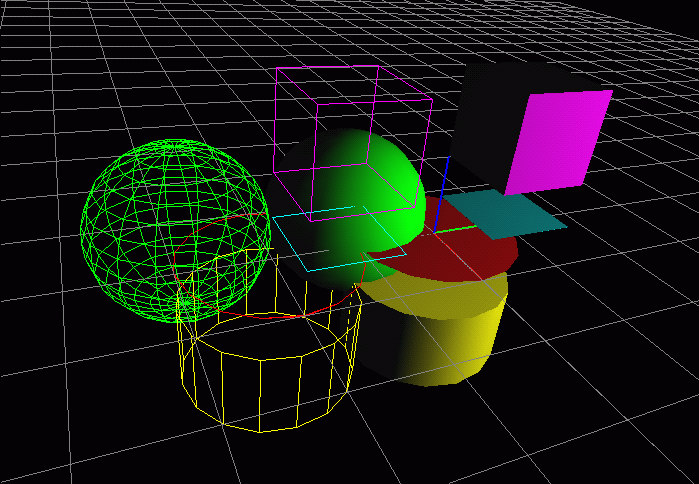

Affichages simples
Le but de ce TP et des suivants est de vous faire ajouter de nouvelles classes d'objet dans NanoEdit (comme le segment, la sphère,
...). Dans tous les cas, un squelette de programme en langage C
vous est fourni et vous le modifiez afin d'ajouter l'affichage (avec Open
GL) de l'objet en question.
Première étape : recopier le squelette
Il faut recopier le
squelette de o_primitives.c
dans le répertoire NE que vous
avez créé au précédent TP.
Pour ce faire, vous pouvez exécuter la commande :
cp /home/exco/NE/stable/TP/C/o_primitives.c $HOME/NE
Deuxième étape : compiler
Ensuite, vous allez dans le répertoire NE
et vous tapez /usr/local/bin/make. Une fois lancé,
vous pouvez créer des instances de tp_carre, tp_cercle,
tp_cube, tp_cylindre, tp_sphere
(dans le menu TP Infographie)
Rien ne va s'afficher car votre travail est
de faire l'affichage de ces primitives.
Troisième étape : programmer
Vous vous limiterez dans un premier temps
à un affichage filaire (sans facette).
N'oubliez pas d'appliquer un type d'affichage "Filaire"
à vos objets, sinon rien ne sera visible.
Encore plus simple : chargez le modèle «TP/test_primitives»
Quand votre TP sera complètement terminé,
il devra afficher :

Les primitives sont ``unitaires'', elle sont toutes
de centre origine et de rayon (ou coté) 1.
Chaque fois que vous modifiez le source vous arrétez NanoÉdit
et vous relancez /usr/local/bin/make.
(Il est possible de laisser NanoÉdit en route et
de faire Fichier/Réinitialise
mais cela ne marche pas à 100%).
Quatrième étape : affichage facette
Pour afficher les facettes, vous avez besoin de :
- glEnable(GL_LIGHTING) :
Pour indiquer que l'on veut tenir compte des sources lumineuses.
- glEnable(GL_CULL_FACE) :
Pour ne pas afficher la facette si elle est à l'envers,
ceci est utile pour accélérer l'affichage des volumes
polyédriques.
- glNormal3f(vx,vy,vz) :
Pour indiquer la normale en chaque point de la facette.
La normale fait partie de l'état courant comme la couleur,
pas de besoin de la préciser à nouveau si sa valeur
est inchangée.
Thierry EXCOFFIER
Last modified: Mon Sep 25 11:26:22 CEST 2000